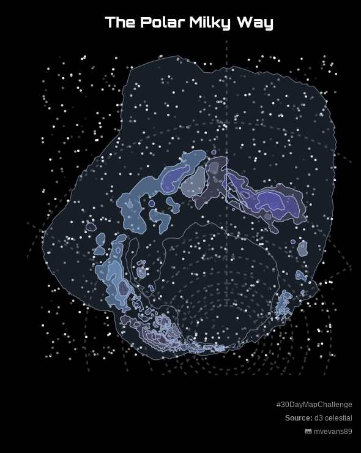

#read in json with sf
mw.url <- "https://raw.githubusercontent.com/ofrohn/d3-celestial/master/data/mw.json"
mw.sf <- st_read(mw.url,stringsAsFactors = FALSE)
#have to wrap the dateline to get rid of lines
milky.wrap <- mw.sf %>%
st_cast("MULTILINESTRING") %>%
st_cast("LINESTRING") %>%
group_by(id) %>%
st_wrap_dateline(options = c("WRAPDATELINE=YES", "DATELINEOFFSET=180")) %>%
ungroup()
#issue with some multi-polygons after the wrapping
milky.wrap[3:202,] <- milky.wrap[3:202,] %>%
st_cast("MULTIPOLYGON")
#transform to polar stereographic because it looks cool
new.crs <- 3995
milky.trans <- st_transform(milky.wrap, crs = new.crs)
#these are fully enclosed polygons
milky.poly <- concaveman::concaveman(milky.trans[1:2,]) %>%
st_transform(crs = new.crs) %>%
st_zm()Mapping space
Day 9 of the #30DayMapChallenge - Space

For the space theme, I wanted to make a map of outer space, specifically the Milky Way. For the data, I followed this super detailed blog post by Kim Fitter. It has the source for some maps of outer space from the d3-celestial package and how to trouble-shoot some issues with the data, specifically problems with dateline wrapping. If you’re interested in learning more about celestial mapping, check out that blog post! Below is the code to download and clean the map of the milky way, based on the post.
I then chose a spacey color palette, to set the theme of the map. Then I randomly assigned these colors and different alpha values to the differ polygon lines of the milky way sf object.
#ordered dark to light
space.pal <- c("#9eadcf", "#7496c1", "#54526a", "#5754a8", "#34344d")
milky.plot <- milky.trans %>%
mutate(randomcol = sample(letters[1:5], size = 202, replace = T)) %>%
mutate(randomalpha = runif(202))I also created a nice star background by generating 1000 random points within the bounding box and assigning them different values of gray so they would like look like they were different distances away, and therefore different levels of brightness.
plot.bbox <- st_bbox(milky.plot)
stars <- data.frame(x = runif(1000,plot.bbox[1],
plot.bbox[3]),
y = runif(1000, plot.bbox[2],
plot.bbox[4])) %>%
#randomize color
mutate(randomcol = sample(paste0("gray", seq(10,100, by = 10)),
1000, replace = T))Then I plotted it, setting the background to black and using the fully enclosed polygons of the milky way to add depth by plotting it as a background with higher transparency. And of course, added a space-themed font for the title, this time Orbitron Black
#easier to read caption
caption.lab <- paste0("#30DayMapChallenge <br>",
"<b>Source: </b>d3 celestial<br>",
"<span style='font-family:fa-brands;'></span> mvevans89")ggplot()+
geom_point(data = stars, aes(x = x, y = y, color = randomcol),
size = 0.001) +
scale_color_manual(values = paste0("gray", seq(10,100, by = 10)),
guide = 'none') +
geom_sf(data = milky.poly, fill = space.pal[2],
alpha = 0.2, color = NA) +
ggnewscale::new_scale_color() +
geom_sf(data = milky.plot, aes(color = "white", fill = randomcol),
size = 0.2, alpha = 0.6) +
scale_fill_manual(values = space.pal, guide = 'none') +
scale_color_manual(values = space.pal, guide = 'none') +
labs(caption = caption.lab,
title = "The Polar Milky Way") +
theme(panel.background = element_rect(fill = "black", color = "black"),
panel.grid.major = element_line(color = "gray20", linetype = "dotted"),
axis.text = element_blank(),
axis.ticks = element_blank(),
plot.background = element_rect(fill = 'black', color = 'black'),
plot.caption = element_markdown(family = "sans", hjust = 1, size = 9,
color = "gray60"),
plot.title = element_markdown(family = "orbitron", color = 'white',
hjust = 0.5, size = 18),
plot.margin = unit(rep(0.2,4), "cm"))